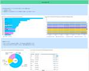

スタディサプリ Product Team Blog
https://blog.studysapuri.jp/
株式会社リクルートが開発するスタディサプリのプロダクトチームのブログです
フィード

Engineering Manager のオンボーディング 12
12
スタディサプリ Product Team Blog
こんにちは、@chaspyです。プロダクト開発部の部長をしています。 スタディサプリ小中高の開発組織では、Engineering Manager (以降 EM と記す) という役割があります。*1 その役割は、エンジニアリングマネージャ/プロダクトマネージャのための知識体系と読書ガイド を引用させてもらうと、People Management + Technology Management を主に担ってもらっています。*2 ありがたいことに、ここ数年で新たに EM にチャレンジしてもらえる機会が増えました。本稿ではそんな EM の活躍をサポートするオンボーディングの仕組みについて説明します。 …
16時間前
スタディサプリ小学・中学講座にRoborazziを導入して半年が経過しました 1
スタディサプリ Product Team Blog
こんにちは、Androidエンジニアの@morux2です。 スタディサプリ小学・中学講座では、Visual Regression Test (以下 VRT)を実施しています。VRTは画像比較によるUIの回帰テストです。変更前後のコードそれぞれに対する画面のスクリーンショットを比較し、意図しない差分を検知することができます。*1 今回はスクリーンショットの撮影にRoborazziを導入して半年が経過したので、現状の運用やTipsを共有できればと思います。なお、執筆当時のRoborazziのバージョンは1.9.0です。 VRTの運用 構成 実行タイミング 撮影内容 実行時間 RoborazziのT…
2日前

技術戦略策定のための Fact 収集術 61
スタディサプリ Product Team Blog
こんにちは。@chaspy です。プロダクト開発部の技術戦略グループのマネージャをしています。 技術戦略グループでは、日頃開発する上での課題の投げ込みや議論、解決するための計画をボトムアップで行っています。技術戦略グループの活動については過去のアウトプットもご覧ください。 blog.studysapuri.jp また、本稿のテーマである、組織やシステムの状況を把握するための Fact 収集については技術戦略 DevOps WG が担当しています。以前発表した資料もご覧ください。 このように、技術戦略グループではエンジニア1人1人が課題だと思うことを表明、宣言し、その課題をトリアージすること、お…
9日前

A/B テストによるプロダクトエンハンスを支援する PLG(Product Led Growth) Team のご紹介
スタディサプリ Product Team Blog
こんにちは。@chaspy です。本記事で紹介するスタディサプリ中学講座の PLG(Product Led Growth) Team の Engineering Manager をしています。 本記事では、2023年2月に結成したこのチームの活動について紹介します。 スタディサプリ中学講座について PLG Team 発足の理由 なぜ A/B テストをやるのか A/B テストを行う方法 指標設計 事例紹介 学んだこと 指標設計の難しさ 必要なサンプル数を集める難しさ 意思決定を早くするためのモニタリングの重要さ おわりに スタディサプリ中学講座について スタディサプリ中学講座は、中学生向けのオン…
1ヶ月前
detekt × Dangerで、プルリクコメントにルール名を表示する
スタディサプリ Product Team Blog
こんにちは。スタディサプリ Androidエンジニアの@morayl です。 本記事では、Kotlinの静的解析ツールであるdetektの解析結果をDangerでプルリクにコメントする際に、ルール名も一緒にコメントするためにしたことを紹介します。 Dangerの基礎言語であるRubyは初心者なので、有識者から学びながらトライしました。 背景と結果 私が所属するチームでは最近、detektを導入し、Dangerを使ってプルリク上にコメントが出るようにしました。 この状態では、detektの指摘コメントだけが出ています。 一見問題無さそうですが、detektの指摘はルールで管理されているため、ルー…
1ヶ月前
GitHub Copilot for Business 使っています
スタディサプリ Product Team Blog
スタディサプリでエンジニアリングマネージャー等をしている @pankona です。 スタディサプリ (小中高、English) では GitHub Copilot for Business を使っています。本稿では、GitHub Copilot for Business を導入した背景と、導入後の活用方法について紹介します。 GitHub Copilot for Business とは GitHub Copilot 公式サイト: https://github.com/features/copilot もはや説明不要かもしれませんが、GitHub Copilot はいわゆる AI プログラミング…
2ヶ月前
スタディサプリ小中高プロダクト開発部2023年の登壇資料紹介
スタディサプリ Product Team Blog
こんにちは。技術広報チーム*1の @chaspy です。本記事では2023年に発表されたスタディサプリ小中高の登壇資料を紹介します。 Summary 2023年の登壇は合計19件ありました。 技術領域別の内訳は以下です。どの領域も満遍なく登壇がありました。 技術領域 登壇数 SRE 6 Platform 3 QA 3 iOS 3 Android 2 Web 2 登壇資料の紹介 それでは技術領域別に紹介していきます。 SRE インシデントにどう対応してきたか？各社のポストモーテムから学ぶ Lunch LT 登壇日: 2023/02/09 登壇者: @chaspy 想定読者: ポストモーテムの運用…
2ヶ月前
スタディサプリ小中高の技術戦略について
スタディサプリ Product Team Blog
この記事は Enginnering Manager Advent Calendar その２の1日目の記事です。（大遅刻しました） こんにちは。@chaspy です。10月からスタディサプリ小中高*1プロダクト開発部の部長をしています。 本記事では、我々の組織で取り組んでいる技術戦略の現状と今後についてお伝えします。 技術戦略とは何か スタディサプリ小中高の技術戦略 開発比率適正化 課題発見と改善サイクルの確立 直近の取り組み ガイドラインの策定 マイクロサービスの命名 今後追加が予定されているもの monolith の方針検討 共有データベースに対する Model 層の管理方針 api end…
3ヶ月前
社内技術ドキュメンテーションを科学する
スタディサプリ Product Team Blog
部署内の技術トーク会にて、理想的なドキュメンテーションにおいて回避不可能なトレードオフと、それを踏まえた実践的な手順を発表しました。その際のワークショップで得た他エンジニアが持つ Pains や知見、そして彼らからの反響を共有致します。
3ヶ月前
入稿devsチームで、校閲PDF出力機能のリニューアルをおこなった話【2/2 振り返り編】
スタディサプリ Product Team Blog
こんにちは、スタディサプリで開発をしている @motorollerscalatron です。 前編では、「入稿」「校閲」ドメインの発足からサブチームへの切り出しと、校閲出力サービスのリニューアルのエピソードを技術的観点を交えながら共有させていただきました。この後編では、プロジェクトが完成しきった時点での自身の省みを中心に共有させていただきます。 今回の案件で、問題解決に対して大事だと感じたこと 知識をもっている人をうまく引き込むためには、質問は端折らない ペアプロと壁打ち 少しでも難しく見えてきたら issue を分割・追加／１回で完璧なものを作ろうとしない まとめ 今回の案件で、問題解決に対…
4ヶ月前
入稿devsチームで、校閲PDF出力機能のリニューアルをおこなった話【1/2 入稿ドメインとは？〜開発事例編】
スタディサプリ Product Team Blog
こんにちは、スタディサプリで開発をしている @motorollerscalatron です。 私は、5 年前に web エンジニアとしてスタディサプリに join していますが、今年に入ってから、今までの社内(中学講座の開発プロジェクト（通称 tara、最近は 小学講座も加わっています） の web アプリケーション開発に比べて、少し細分化されたドメイン領域である「入稿」のコード開発と運用をおこなっています。今回は、その中でNext.jsを使った校閲出力に特化したマイクロサービスを１つ立てることになったプロジェクトが最近完成したので、そのお話をさせてください。 「入稿」というドメイン領域の切り…
4ヶ月前
スタディサプリにおけるKarpenterの導入トラブル振り返り
スタディサプリ Product Team Blog
スタディサプリにおけるKarpenterの導入トラブル振り返り こんにちは。スタディサプリ小中高SREの@aoi1です。 スタディサプリでは、Kubernetesを利用しているのですが、Nodeの運用自動化のために2023年3月から本番環境を含む全環境でKarpenterを導入しています。 Karpenterのおかげで開発者体験を向上させることができたり、コスト削減を行うことができました。便利で良いことが沢山ある一方、本番環境で問題が発生するなどいくつかハマったこともありました。 本ブログでは私たちがハマったポイントを通じて、Karpenterの導入を検討している方、あるいは既に本番環境でKa…
4ヶ月前
Android チームが使っている GitHub Actions のユニークな自動化レシピ集🍞👨🍳
スタディサプリ Product Team Blog
スタサプ小中高を開発している Android エンジニアの@maxfie1d、@morayl とスタサプ ENGLISHを開発している Android エンジニアの田村です。 GitHub Actions(以下 GHA) はアプリをビルドしたりストアに配信したりすることに使えるのはもちろん、もっともっと色々なタスクを自動化することができます。本記事では Androidチームによる GHA を使った自動化レシピをご紹介します。 まずはスタサプ小中 Android版での取り組みを紹介します。 自動でラベルを付与する 2023年9月に リニューアルをしたスタディサプリ 小学講座をリリースしました。ア…
4ヶ月前
SLI の計測のために Envoy や service mesh を選択しなかった理由
スタディサプリ Product Team Blog
こんにちは。スタディサプリの小中高プロダクト開発部で主にコミュニケーション機能の開発をしている @snowfield702 です。 今回はスタディサプリで SLI の計測に Envoy と service mesh を使うのをやめて Datadog APM を利用することにしたという話をしたいと思います。 また、スタディサプリ小中高プロダクト開発部では、スタディサプリ ブランドのうちの複数のプロダクトを開発しております。 この記事では「スタディサプリ 小学/中学/高校/大学受験講座」を対象に話をしていきたいと思います。 Envoy を導入した経緯 スタディサプリでは主にマイクロサービスの SL…
4ヶ月前
単一アプリでユーザに応じた機能切り替えを実現するために
スタディサプリ Product Team Blog
はじめに iOSエンジニアのkomajiです。2023年9月に「スタディサプリ 小学講座」をリニューアルし、既存の「スタディサプリ 中学講座」アプリに組み込む形でリリースしました。 この小学講座は既存の中学講座とは機能が全く異なっていますが、単一アプリで両方の機能を提供しています。これらはユーザの学年に応じて切り替わるようになっているのですが、本記事では、単一アプリでこの機能切り替えをどのようにして実現してきたのかについて紹介します。 小学講座について 小学講座では、子どもが自ら学び、その子に一番合った最高の学習体験が提供されることを目指しています*1。これを実現する仕掛けを組み込むために、小…
5ヶ月前
SwiftUI: Explicit Identity の正しい使い方と落とし穴
スタディサプリ Product Team Blog
こんにちは。iOS エンジニアの @_nkmrh です。 SwiftUI が発表されてからはや4年が経ち、昨今のプロダクションコードでも多く活用されているのではないでしょうか。 そこで本稿では SwiftUI を活用する上で欠かすことのできない SwiftUI.View の Explicit Identity についておさらいしていきたいと思います。 Explicit Identity とは まずはじめに、SwiftUI の Explicit Identity とはなんなのかを説明しておきたいと思います。 Explicit Identity は SwiftUI が個々のView を識別するため…
5ヶ月前
デザインをそのままの形でユーザーにお届けするためのデザインQA
スタディサプリ Product Team Blog
スタサプ小中で Android エンジニアをしている石田とデザイナーの竹本です。 2023年9月に リニューアルをしたスタディサプリ 小学講座をリリースしました。小学開発ではエンジニアが実装したアプリの画面をデザイナーがレビューするプロセスを デザインQA という形で明文化したので本記事ではその紹介をしたいと思います。 デザインQA デザインQAの導入経緯 これまでデザイナーが作成したデザインをもとにエンジニアが実装した成果物の確認はお互いによしなにやるという暗黙的な運用になっていました。この運用ではメンバーの裁量に依る部分が大きくなってしまうため、小学開発を機にエンジニアが実装後に必ずデザイ…
5ヶ月前
Firebase Remote Config の変更内容を Slack に通知する
スタディサプリ Product Team Blog
こんにちは、@manicmaniac です。スタディサプリ iOS アプリ開発チームのエンジニアリングマネージャーをしています。 小ネタみたいな話ではありますが、Firebase Remote Config の変更を Slack に通知するようにしたらちょっと便利だったので記事にしようと思いました。 Firebase Remote Config とは Firebase Remote Config が何か知らない方もいると思うので、公式サイトから引用すると、 Firebase Remote Config Firebase Remote Config は、ユーザーにアプリのアップデートをダウンロー…
5ヶ月前
WebアプリケーションにGoの並行処理アーキテクチャを導入してSLOを改善し、WebAPIを100倍速くした話
スタディサプリ Product Team Blog
こんにちは。スタディサプリの小中高プロダクト基盤開発グループでProduct Platform Engineer兼テックリードをやっている@tooooooooomyです。 今回は、WebアプリケーションにGoの並行処理機構を導入してSLOを改善し、WebAPIを100倍速くした話をしたいと思います。 前提条件 システムを0から作らない場合、アーキテクチャの改善の際には前提条件が付きものです。そこでまずは今回のシステムの前提条件をお話します。 対象となるシステムと、アーキテクチャ 今回対象とするシステムは、ここでは security-tracker と呼び、Webアプリケーション本体はGoで書か…
6ヶ月前
スタディサプリ小学・中学講座でRoborazziを導入しました
スタディサプリ Product Team Blog
こんにちは、Androidエンジニアの@morux2です。本記事ではスクリーンショットの撮影にRoborazziを導入した経緯をご紹介できればと思います。 はじめに きっかけ RoborazziとPaparazziの比較 書きやすさ 複数端末での撮影 スクロールした画面の撮影 Showkaseの流用 Roborazziの採用理由 現状の運用 さいごに はじめに スタディサプリ小学・中学講座では、UnitTestに加えてVisual Regression Test (以下 VRT)を行っています。VRTは画像比較によるUIの回帰テストです。変更前後のコードそれぞれに対する画面のスクリーンショット…
6ヶ月前
GraphQL Tokyo Meetup #21 で会場スポンサーしました #GraphQLTokyo
スタディサプリ Product Team Blog
こんにちは。@chaspy です。 9/13 に開催された GraphQL Tokyo にて弊社九段下オフィスの会場を提供させていただきました。 www.meetup.com 九段下オフィスについて 九段下駅から徒歩3分でとっても便利な立地です。 goo.gl 以下の記事も合わせてご覧ください。 www.recruit.co.jp 当日は30名近くの方が参加されました。 発表について なんと今回はオープンソース開発者グループ The Guild のメンバーである Laurin Quast さんがドイツから東京に来てトークをしてくださりました。 彼のトークテーマでもある graphql-code…
6ヶ月前
Developers Summit 2023 SummerでADRについて発表しました & ベストスピーカー賞を受賞しました🎉
スタディサプリ Product Team Blog
こんにちは。スタディサプリでプロダクトプラットフォームの開発を行っている @highwide です。 少し前の話になってしまいますが、2023-07-27に行われた「Developers Summit 2023 Summer」(以下、「デブサミ」と書きます)にて「アーキテクチャデシジョンレコード」(ADR)についての発表をしましたので、その報告をさせていただきます。 「日々の意思決定の積み重ねを記録するアーキテクチャ・デシジョン・レコード」というタイトルで発表しました。 発表資料はこちらです。 また、デブサミのサイトでは、発表の当日の録画が見られるようです。 途中、自分の声に反応してしまったA…
6ヶ月前
会社ブログの更新を継続するための取り組み
スタディサプリ Product Team Blog
こんにちは。Webアプリケーションエンジニアの @ttokutake です。 スタディサプリでは定期的にプロダクトブログを更新するようにしています。 他社様と比較すると更新頻度は少ないかもしれませんが、少なくとも月に1回程度の更新をするように頑張っています。 今回は定期的にブログを更新するために取り組んでみていることを紹介しようと思います。 ブログ運用の目的 スタディサプリのプロダクトブログは中長期的な採用活動の活性化を目的として運用されています。 スタディサプリというサービスやスタディサプリの開発の現場についてご紹介することで、少しでもスタディサプリの開発の雰囲気を知っていただくことを狙って…
7ヶ月前
入社3ヶ月で取得した育休記録
スタディサプリ Product Team Blog
iOSエンジニアのkomajiです。昨年の9月に入社しましたが、そのわずか3ヶ月後の12月末から育児休業・出産育児休暇（以下、育休）を合わせて3ヶ月間取得したので、記憶が色褪せないうちに記録として残しておきます。 育休まで 取得の相談 選考段階で、入社の3ヶ月後あたりから育休を取得したい旨を伝えていました。入社の3ヶ月後となると試用期間もまだ終わっていない時期なので、そもそも取得できるのか、取得できるとしても長期間取得するのは憚られるなという思いがあり、不安を感じていました。そんな中「入社直後でも取得できます。期間も遠慮せずにおっしゃってください。」との回答をいただきました。取得できる旨だけで…
7ヶ月前
AWS Dev Day 2023 Tokyo で スタディサプリのDarklaunch について発表してきました
スタディサプリ Product Team Blog
こんにちは。スタディサプリの小中高プロダクト基盤開発グループでProduct Platform Engineer兼テックリードをやっている@tooooooooomyです。 今回は、先日開催された、AWS Dev Day 2023 Tokyo にて、チームメンバーで Senior Product Platform Engineerの@ujihisaとともに [スタディサプリ] Railsアプリケーションのモジュールとして存在していたDarklaunch(FeatureToggles)を Goアプリケーションとしてフルスクラッチでマイクロサービス化した話 という発表を行ってきたので、そのことについ…
9ヶ月前
Sprint Planning をやめた話
スタディサプリ Product Team Blog
小中新規開発グループ (a.k.a. tara チーム) の qsona です。 tara チームでは、スタディサプリ中学講座というプロダクトを開発しており、約1年前 (2022-02) に本リリースして以来、継続してプロダクト開発を続けています。 tara チームのプロダクト開発は、基本的にスクラムの手法にのっとる形で行っています。ビジネス的な境界により分けられた3つのスクラムチームが存在します。 スクラムの運用については、それぞれの現場において悩みごとが起きがちだと思いますが、tara チームでもご多分に漏れず、うまくいっていること・いっていないことが存在します。今回は、その3つのうちの1…
9ヶ月前
Jetpack Composeでスポットライト機能を実装する
スタディサプリ Product Team Blog
こんにちは、Androidエンジニアの@morux2です。本記事ではJetpack Composeでスポットライト機能を実装する方法を紹介します。 はじめに スポットライトは、特定の要素を目立たせることでユーザーの行動を促す機能です。スタディサプリ中学講座のオンボーディング画面にも採用されており、現在カスタムViewからの移行を進めています。 スタディサプリ中学講座のオンボーディング 今回は実装を3つのステップに分けて紹介します。 実装の3ステップ 画面全体を半透明の黒いViewで覆う スポットライトを当てたい要素の長方形の座標を取得する 取得した座標に沿って黒いViewを切り抜く 参考にさせ…
9ヶ月前
早期ミスマッチ解消のために、職務経歴書のガイドを公開しました
スタディサプリ Product Team Blog
こんにちは、Web Engineer の @wozaki です。 今回は、採用プロセスの改善として、職務経歴書に記載いただきたいことを公開した背景をご紹介します。 概要 職務経歴書に、採用チームとして期待する情報が不足していることがある 不足すると、以下の課題が発生することがある 書類選考は通過するが、その後の選考でミスマッチと分かる (経歴書が充足していたら、より早期にミスマッチが分かったかもしれない) 面接の前に経歴に踏み込んだ質問を設計できずに、面接時間内でマッチしているか情報を引き出す難易度が上がる 既存の対策として、情報の追記をお願いすることがある 新たな対策として、記載いただきたい…
9ヶ月前
「スタディサプリ中学講座」における最近の Jetpack Compose 関連の改善
スタディサプリ Product Team Blog
はじめに こんにちは。「スタディサプリ中学講座」 で Android エンジニアをしている @maxfie1d です。「スタディサプリ中学講座」 では Jetpack Compose を最大限に活用しています。現在アプリ全体の 7 割程度の UI は Jetpack Compose で構築されています。 Jetpack Compose は 2021 年 7 月の正式リリースから間もなく 2 年が経とうとしており、様々なアップデートを重ねてきました。「スタディサプリ中学講座」 では Jetpack Compose のアップデートを継続的にプロジェクトに取り入れています。この記事では 「スタディサ…
9ヶ月前
新しいチームメンバーとしてオンボーディング体制について語りたい
スタディサプリ Product Team Blog
はじめまして、小中高決済基盤開発グループの @tacumai です。 ぼくは2023年4月にスタディサプリの開発組織にジョインした、いわゆる新規参画者です。ちょうどこのブログを書いてる時期が参画から1ヶ月ほど経ったタイミングなので、初心をこのブログに残したいと思います。 この記事で一番伝えたいことは アプリケーション開発経験が薄くとも、技術的な側面でもドメイン知識の側面でも手厚くサポートしてくれる土壌がここにはあります。安心してうちにきてください!! です。 以下、なぜぼくがそう思ったのかをまとめました。 そもそもスタディサプリに入った経緯 ぼくは2023年3月まで、ホットペッパーグルメ等の開…
10ヶ月前